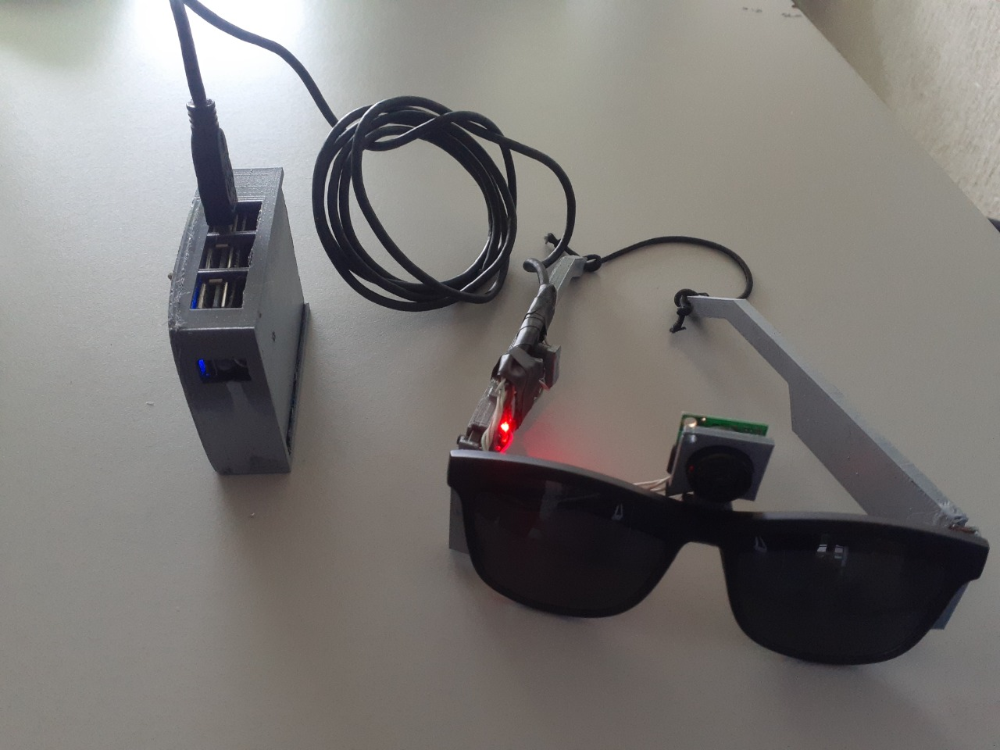
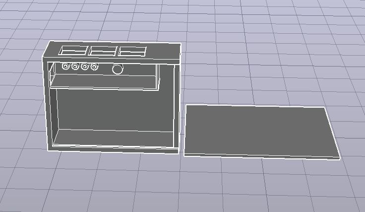
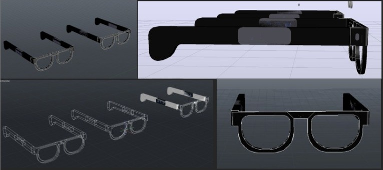
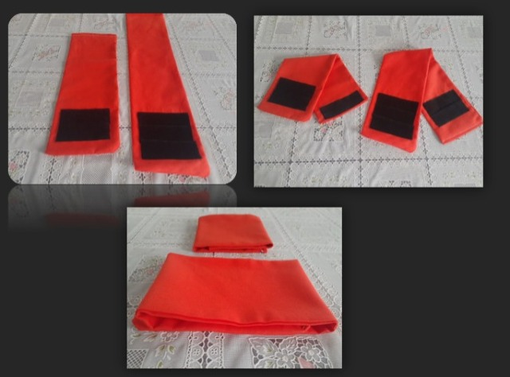
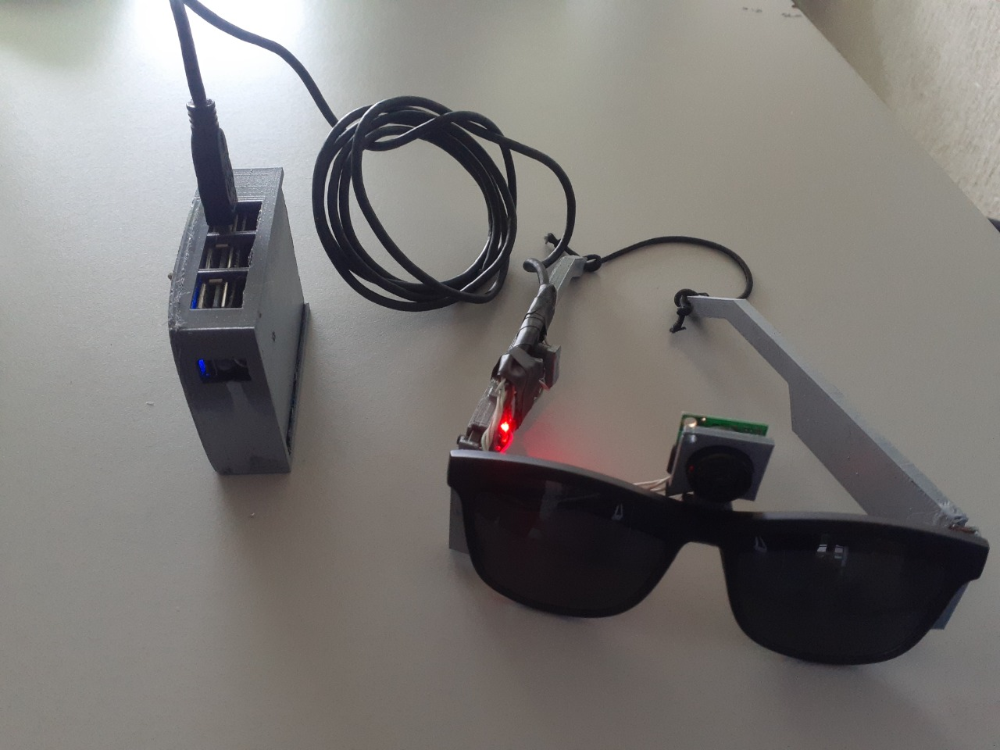
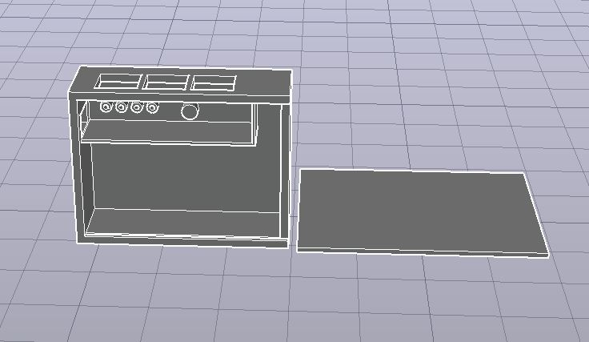
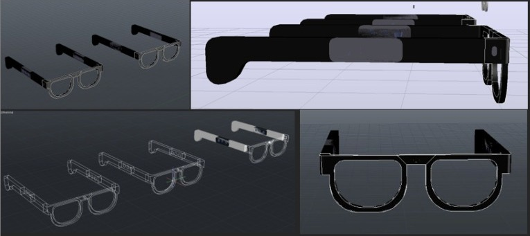
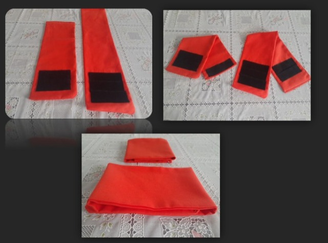

Sistema ultrasónico-Bastón

1Explicación del código
Para el desarrollo del código como anteriormente se mencionó se empleó parte del mismo código desarrollado en las simulaciones anteriores por lo que solo se añadieron algunos elementos y variables que nos permitirían que el sistema funcionara de una forma más completa.
El código contempla a 2 elementos de entrada y 5 de salida, el sistema solo funciona si el Botón (Bot) se encuentra encendido por lo que se coloca una condicional if para que evalué este aparatado, una vez esta se cumpla la variable C1 suma +1 a su valor inicial 0 para indicar que el sistema se encendió por lo menos 1 vez, posteriormente se lee un condicional if para indicar que ya encendió el sistema una vez esta se cumpla manda a encender el sensor IF por 2 segundos y posteriormente lo apaga para después sumar +1 ala variable C3 con el fin de que esta condicional no vuelva a repetirse hasta que el sistema reinicie, seguido de ello se manda una señal al sistema para encender Triger (TRIG) el cual manda una señal a una frecuencia especifica la cual al revotar con algún objeto es captada por la entrada Eco que devuelve el tiempo que tardo la señal en hacer el recorrido y mediante una operación de la duración (tiempo en recorrido) entre 58.2 que es una constante determinada por el fabricante, nos da como resultado la distancia a la que se encuentra el objeto en centímetros.
Posteriormente se evalúa con diferentes condicionales if si el objeto se encuentra a un rango determinado. La primera condicional evalúa si el objeto se encuentra a una distancia de 1cm a 25cm, la segunda condicional evalúa si el objeto está a una distancia de 1cm a 50cm y finalmente el tercer condicional evalúa si el objeto se encuentra en un rango de 1cm a 75cm. Una vez que se cumpla alguna de estas condicionales el sistema manda a prender el sensor correspondiente y solo se apagara si el objeto sale del rango determinado, de manera que entre más cerca se encuentre el basto de un objeto aumentaran la cantidad de sensores encendidos del sistema.
En caso de que el Botón (Bot) se encuentre apagado los elementos de salida TRIG, Sen, Sen1 y Sen2 permanecerán apagados y los valores de C1, C2 y C3 se declararan a 0, para delimitar los errores una vez que se vuelva a prender el sistema. Sin embargo, si el sistema ya se encendió por lo menos 1 una vez, al apagarlo no solo se cumplirán las anteriores condicionales si no que mandara una señal a el sensor IF que lo encenderá por 1 segundo, posteriormente lo apagara para después sumar un +1 al C2 para evitar que esta condición se vuelva a ejecutar, y sirviendo como un medio para indicar que el sistema ya está apagado.


 






